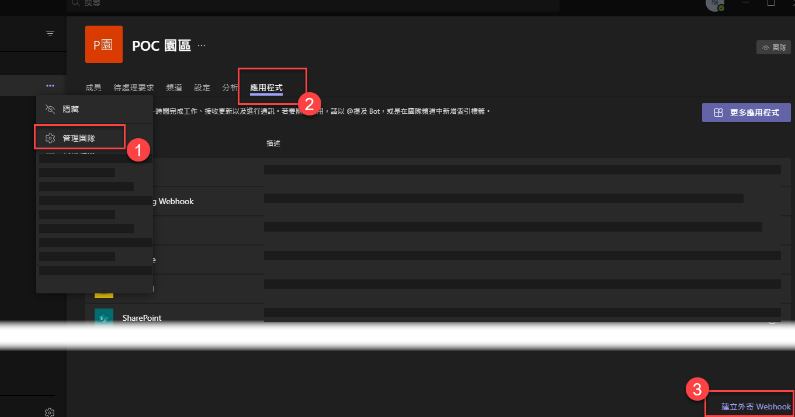
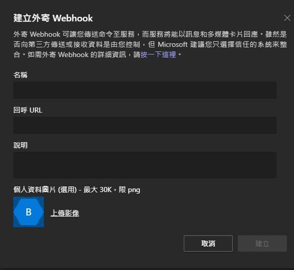
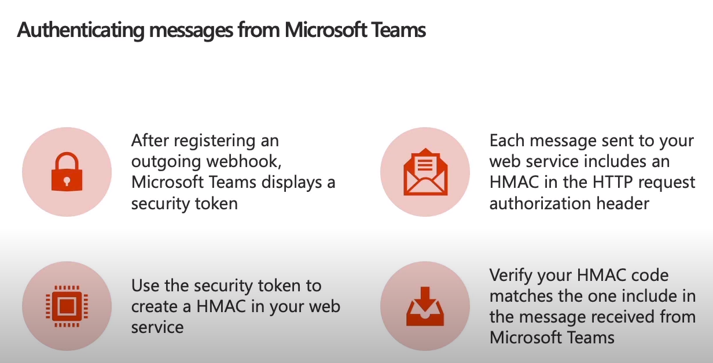
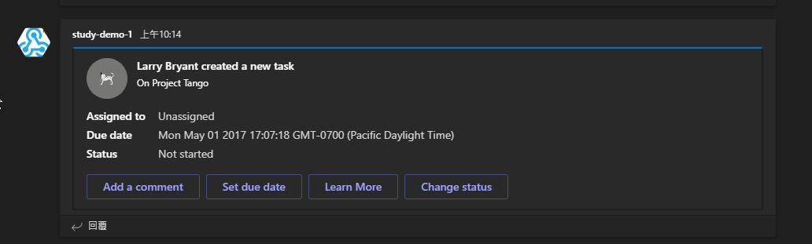
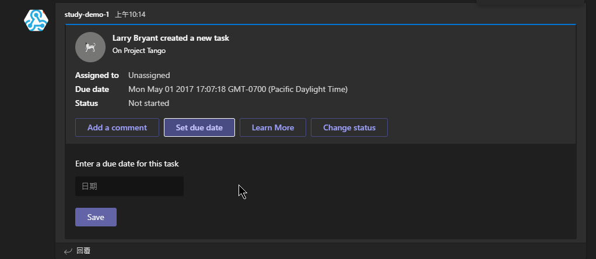

Teams 可透過 webhook and connectors 的方式來做訊息的交換，但對於每一種的使用及限制真的很不熟，所以將透過此筆記來釐清其中的關係
Teams 的應用程式中可以看到**連接器(connector)**的項目可以新增，其中有很多與第三方服務的連接器，而 Incoming WebHook 是我們一定要加入的功能，畢竟想要傳訊息到 Teams，這一條路是要開通的
Webhooks and Connectors
根據官網文件指出，webhooks and connectors 有以下四種
Outgoing webhooks
使用者可以透過 Outgoing webhooks 送 request 到自己設定的服務，並取回相對應的回應。以下重點整理
-
Scoped configuration: scoped on a team-by-team basis
-
Reacive messaging: 透過
@mentioned的方式啟動Outgoing webooks -
被呼叫的服務只有 5 秒鐘可以回應
-
Standard HTTP message exchange: 回傳的訊息會加在原本的訊息下 (as reply)
-
可回傳 message, 例如 單純文字或卡片
-
不能被包在 Teams app 內
-
適用情境特地的團隊工作流程，但不適用於資料量比較大的事件上，因為有回應時間上的限制
-
運作方式跟寫 bots 很像，但不一定要使用 Bot Framework
-
Litmited Microsoft Teams API Message support: messages send to web service, but don’t have access to APIs like list of chnnels or the channel roster in team
-
註冊 Outgoing Webhooks 的地方
-
在團隊 -> 管理團隊 -> 應用程式


建立完成後，會取得一個安全性金鑰，需要之後用來驗證資訊安全性使用，更多細節請參閱下一點
-
安全性

-
參考文件
-
Connectors
允許使用者訂閱服務的通知訊息
- 會有對應的 https 網址
Incoming webhooks
-
最單純的 Connector
-
Incoming webhooks 是根據團隊開放使用 (新增應用程式)
-
Independent HTTPs messaging support: present clear & consisten messages with cards
-
Secure resource definition: message included as JSON paylods; prevents malicious code injetion
-
Actionable messaging support: send messages as text-based or rich cards
-
Markdown Support，不支援 HTML 語法
-
範例回應樣式


-
參考資料
Office 365 Connectors
- 可以被打包上架的 Connectors
- 可以有自己的設定頁面
- messages type: Office 365 Connector cards
- 可以收集安裝 Connectors 的設定資料以供後續發訊息使用
- 參考資料
Rate limiting for Connectors
| Time (seconds) | Maximum allowed requests |
|---|---|
| 1 | 4 |
| 30 | 60 |
| 3600 | 100 |
| 7200 | 150 |
| 86400 | 1800 |
Cards
卡片訊息在 Teams 內很常見，而 Adaptive cards 算是比較新的卡片格式，但在 Connectors、Bots、Messaging extension 下分別有些限制
- Adaptive cards in incoming webhooks 的限制
- All native adaptive card schema elements, except
Action.Submit, are fully supported. - The supported actions are Action.OpenURL, Action.ShowCard, and Action.ToggleVisibility.
- All native adaptive card schema elements, except
- 更多卡片類型及限制的說明文件: 網址
目前的狀態: Adaptive Cards 遇上 Incoming webhooks 的支援度基本上是不能用的，支援完整度最好的是 Bots in Teams，只能透過 message 附件的方式包進去，可是這樣子的作法畫面就很醜 (範例)，可惜